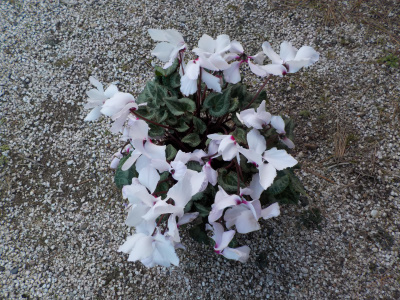
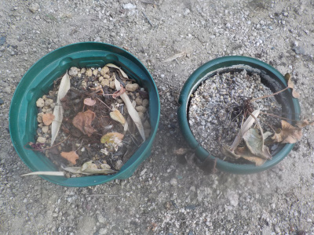
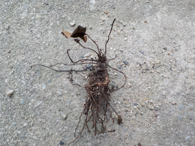
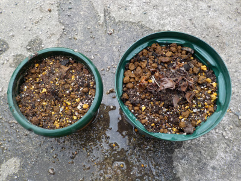
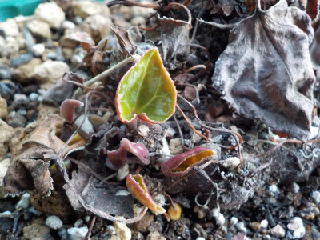

遊びで植物を育てよう
2年目のシクラメン。今年も1鉢枯らしました。
更新日 : 2022/11/06
2022/01/08
シクラメンが安かったので買いました。

もう買わないと決めていたシクラメンですが、安かったので買ってしまいました。
このボリュームで税込み300円とちょっとでした。
底面給水の鉢だけでも300円くらいしそうです。
TOP > 花 > シクラメン
2022/07/31
シクラメは休眠状態になったかな？

休眠状態になるように水を与えないようにしていました。
枯れましたね。
秋に水を与えたら復活する予定ですが、復活するのかな？
TOP > 花 > シクラメン
2022/10/10
シクラメンの球根がありませんでした。

シクラメンの土を新しくしようと抜いてみたら、球根がありませんでした。休眠してたんじゃなくて枯れてたってことか。

でもちょっと上の部分が硬かったので鉢に植えました。芽が出るかな。
隣の大きいのはガーデンシクラメンです。こっちは大きな球根があるのできっと育つでしょう。
TOP > 花 > シクラメン
2022/11/06
ガーデンシクラメンの芽が出ました。

水をやりをしだして、1月くらい経ってやっと芽が出ました。葉っぱがとっても小さいです。
お店では花が咲いているものが売っているので、だいぶ遅いですね。休眠させない方が良かったかな。
普通のシクラメンは芽が出なかったので、枯れていたようです。
TOP > 花 > シクラメン
シクラメンの記事をまとめたものはこちら
【おいしいものを食べよう。】【たくさん寝よう。】
【ソロ活をしよう!】【季節感のあることをしよう。】【動画視聴はほどほどに。】【当サイトの全てのコンテンツは無断転載禁止です。】